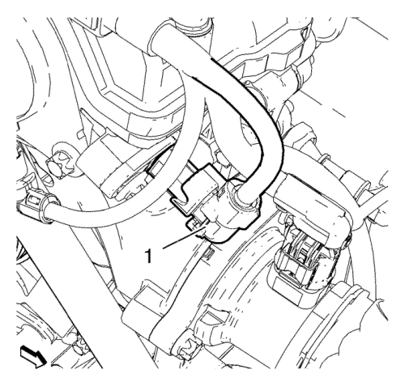
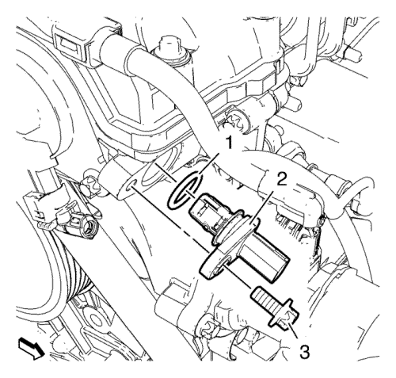

Sustitución del sensor de posición del árbol de levas
Procedimiento de desmontaje
- Abra el capó.

Nota: El gráfico muestra el sensor de posición del árbol de levas de escape. Utilice el mismo procedimiento para el sensor de posición del árbol de levas de admisión.
- Desconecte el enchufe del mazo de cables del sensor de posición del árbol de levas (1).

Nota: El gráfico muestra el sensor de posición del árbol de levas de escape. Utilice el mismo procedimiento para el sensor de posición del árbol de levas de admisión.
- Retire el tornillo del sensor de posición del árbol de levas (3).
- Desmonte el sensor de posición del árbol de levas (2) y el anillo de junta (1).
Procedimiento de montaje
Nota: El gráfico muestra el sensor de posición del árbol de levas de escape. Utilice el mismo procedimiento para el sensor de posición del árbol de levas de admisión.
- Monte el sensor de posición del árbol de levas (2) y el anillo de junta (1).
Precaución:Consulte Precaución con las fijaciones en la sección Prólogo.
- Monte el tornillo del sensor de posición del árbol de levas (3) y apriételo hasta 8 N·m (71 lib. pulg.).
Nota: El gráfico muestra el sensor de posición del árbol de levas de escape. Utilice el mismo procedimiento para el sensor de posición del árbol de levas de admisión.
- Conecte el enchufe del mazo de cables del sensor de posición del árbol de levas (1).
- Tras sustituir un sensor de posición del árbol de levas, utilice una herramienta de exploración para que la calibración sea más rápida. Consultar Programación y configuración del módulo de control del motor → LNP → LUW, LUJ → LLW → LXT → LXV, 2H0
- Cerrar el capó.
| © Copyright Chevrolet. All rights reserved |